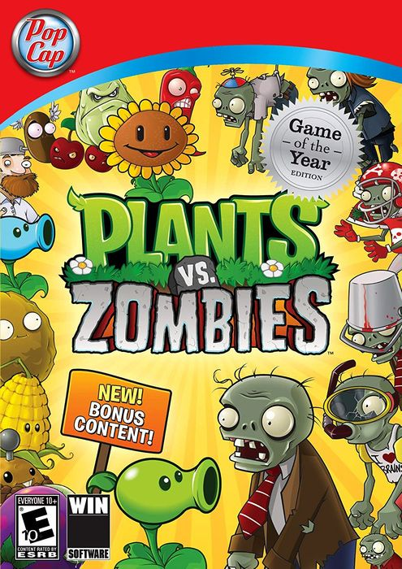

Plants Vs Zombies GOTY 243 MB
Género: Estrategia, Casual
¡Un nuevo juego de acción y estrategia de la mano de PopCap, los creadores
de Bejeweled y Peggle! Los zombis están invadiendo tu hogar, ¡y la única
defensa es tu arsenal de plantas! Armado con 49 plantas fulmina-zombis
como el lanzaguisantes y las bombas cereza, tendrás que pensar rápido y
plantar aún más rápido para detener a los Zombies ...